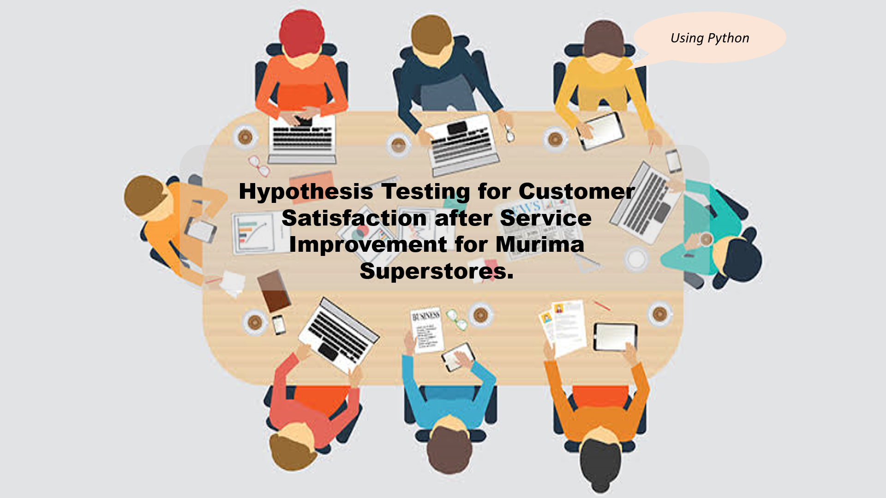
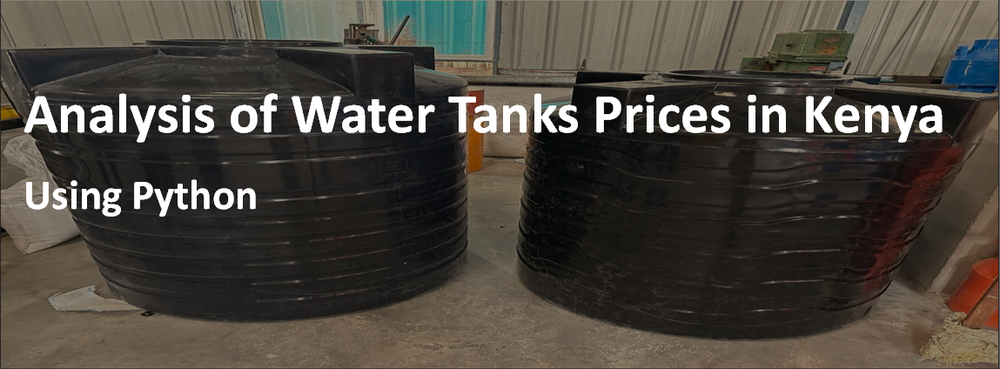
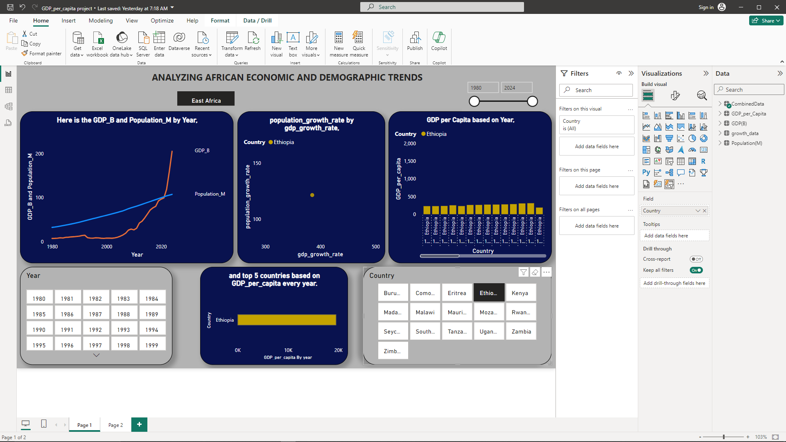

Hello,
I specialize in Data Analytics which involves experience in analyzing datasets to deliver actionable insights - Data Analysis and Visualization with Microsoft Excel, Power BI, where I create dynamic dashboards and reports,
Data Manipulation with Python, and Data Management for data stored in databases using SQL.
Additionally, I perform advanced analytics, including predictive and prescriptive analysis using Python.
I value quality, thus I am constantly trying to broaden my scope of these aspects in my Analytics journey. It involves assessing my skills as well as learning from others. I am passionate about problem-solving and therefore, I'm committed to presenting insights in a format that is easy for stakeholders
to understand and act upon.
My Skills
Data Analysis
Data Visualization
Data Management
Data Cleaning
Data Collection
Statistical Analysis
Machine Learning
Report Writing
My Tools
Microsoft Excel
SQL
Python
Microsoft Power BI
My Projects

Customer Satisfaction Analysis.
In this project, I used hypothesis testing(paired t-test) to determine if there is a
statistically significant improvement in customer satisfaction after the service improvements at Murima Superstores.
Skills demonstrated: Data Manipulation and Analysis, Statistical Analysis(Hypothesis Testing), Data Visualization,
Interpretation of Results, Problem-Solving and Recommendations, Python Programming Learn more
Kenyan Government Debt and Revenue Analysis.
It reveals the relationship between Government debt and revenue over a specific period. It includes correlation studies, growth rate comparisons,
and examination of debt-to-revenue ratios. The goal was to assess sustainability of Government finances by analyzing trends in domestic and external debt relative to revenue, including
external grants.
Skills demonstrated: Data Collection & Management, Correlation Analysis, Data Visualization, Report Writing and Presentation Learn more

Analysis of Water Tanks Prices in Kenya.
In this project, the objective was to understand the pricing patterns of water tanks in Kenya across different brands and sizes.
This insights can help consumers make informed purchasing decisions.
Skills demonstrated: Data Collection and Web Scraping, Exploratory Data Analysis (EDA), Hypothesis Testing, Correlation Analysis, Recommendations for Decision-Making
Learn more

Analyzing African Economic and Demographic Trends.
The goal was to analyze and visualize the relationship between GDP and Population growth across different African countries classified as Sub-Saharan and years.
Learn more
Kenyan YouTubers Analysis.
Challenge: The Head of Marketing seeks to identify the optimal Kenyan YouTubers for
conducting marketing campaigns over the marketing period.
Data: To create a dashboard that provides insights, we have a rich dataset of top Kenyan
YouTubers in 2024 containing details about Channel name, Number of subscribers, Total views,
and Total uploads.
Goal: To uncover the recommendable youtubers to work with by using Power BI.
Learn more
Get In Touch
If you're looking for a Data professional with a proven track of record of delivering results, feel free to reach out. I'm here to help you make sense
of your data and drive impactful decisions.
Thank you, and I look forward to working with you!
Book a consultation today.
{kind=link}
{kind=link}
{kind=link}
{kind=link}
{kind=link}